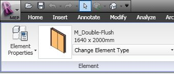
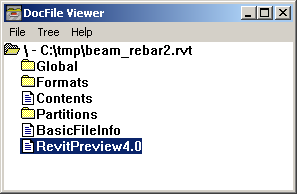

RVT and RFA Thumbnail Image
Here is a question that reappears pretty regularly.
Question: How can I obtain the preview bitmap image or thumbnail from a Revit project or family file using the Revit API?
This is an example of the kind of image I am interested in:

Answer: The topic of getting your Revit thumbnails was already been discussed by Guy Robinson in Bolt out of the Red, but for completeness sake I will partially reiterate it here as well, since the query keep reappearing.
The Revit API does not provide any built-in support for this, but you can make use of generic Windows API functionality instead. Revit project files use Windows structured storage to manage resources internally. You can use the DocFile Viewer utility dfview.exe to look at the structured storage file contents. Here is an example of a Revit project file with the preview image highlighted:

We had a short look at the internal RVT file structure when exploring how to extract the Revit build version from RVT and RFA files.
The thumbnail is a standard PNG file inserted into the Revit structured storage document.
To extract the preview thumbnail image, you can use the Windows IExtractImage interface. Preview.dll is a shell plug-in, i.e. an object that implements this interface. It is used by the Windows Shell Folders to extract preview images for "known" file types. The preview extractor needs to register itself in the registry and implement the two following standard API functions:
STDMETHOD(GetLocation)(
LPWSTR pszPathBuffer,
DWORD cchMax,
DWORD *pdwPriority,
const SIZE *prgSize,
DWORD dwRecClrDepth,
DWORD *pdwFlags);
STDMETHOD(Extract)(HBITMAP*);
More details and sample code are available from Guy's post.